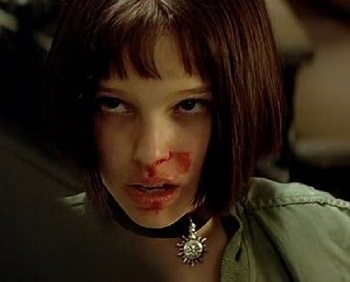
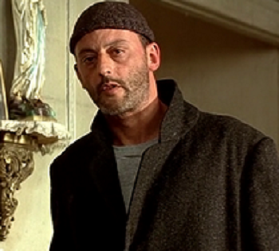
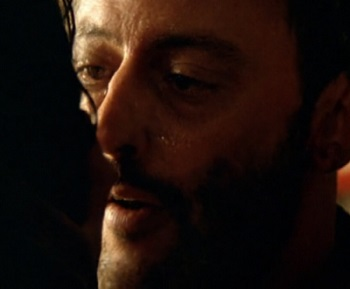

MY FAVORITE MOVIE CHARACTER OST TRAILER
MY FAVORITE MOVIE
Leon
1994

A FAMOUS LINE

[Mathilda]
Is life always this hard, or is it just when you're a kid?
사는 게 항상 이렇게 힘든가요? 아니면 어릴 때만 그래요?
[Leon]
Always like this.
언제나 힘들지.

[Mathilda]
I finished growing up, Leon. I just get older.
난 다 컸어요. 나이만 먹으면 되요.
[Leon]
For me it's the opposite. I'm old enough. I need time to grow up.
나랑 반대구나. 난 나이는 먹을만큼 먹었어. 문제는 아직 어려서 그렇지.

[Leon]
I want to be happy. Sleep in a bed, have roots.
And you will never be alone again, Mathilda.
나도 행복해지고 싶어. 잠도 자고, 뿌리도 내릴 거야.
절대 네가 다시 혼자가 되는 일은 없을 거야, 마틸다.